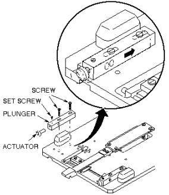

Operating Documentation
Direction 5440001-3, Rev# 6
Signa HDxt Service Methods
Module Version 1.0, Version Date 4/25/07
Operating Documentation |
| Required Persons | Preliminary Reqs | Procedure | Finalization |
|---|---|---|---|
| 1 |
The actuator on the longitudinal drive carriage must be set so that it presses a button on the cradle to mechanically release the cradle from the patient transport, allowing it to move forward into the magnet bore.
To properly adjust the cradle release, slide the plunger back as far as it can go from the front of the carriage (see Illustration 1).
Illustration 1: CRADLE RELEASE FROM TRANSPORT ADJUSTMENT

Loosen the set screw and rotate the threaded actuator in or out as needed, then tighten the set screw.
No finalization steps.